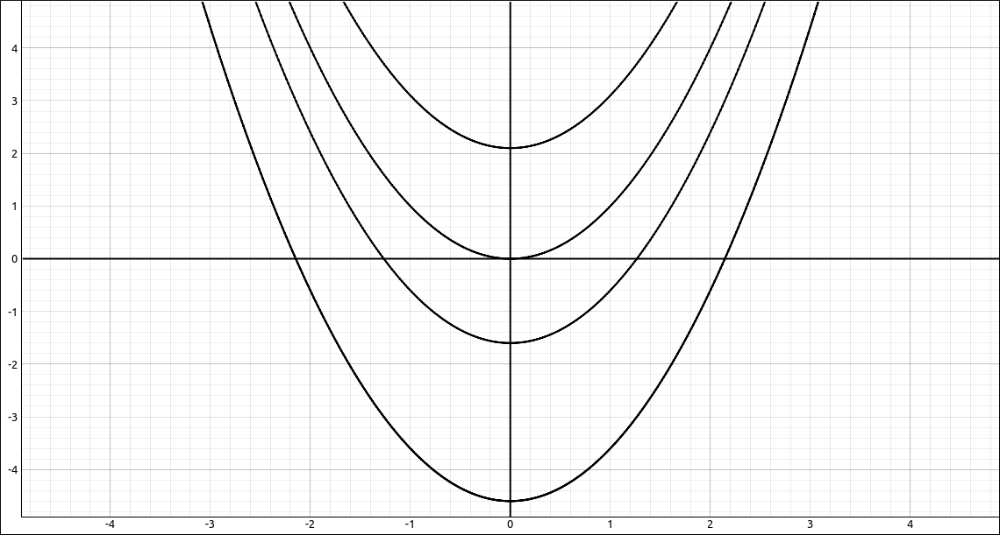
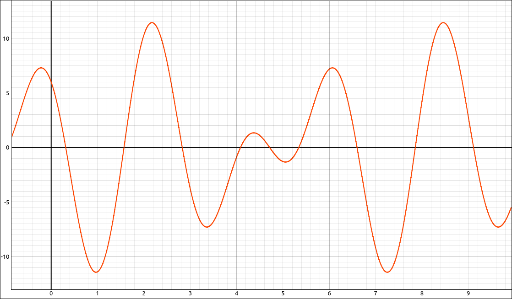
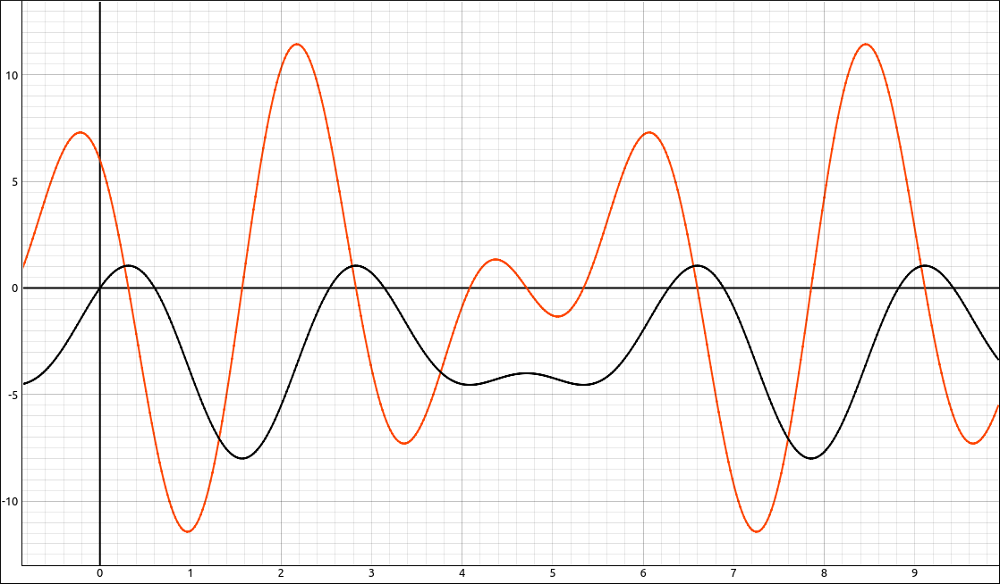
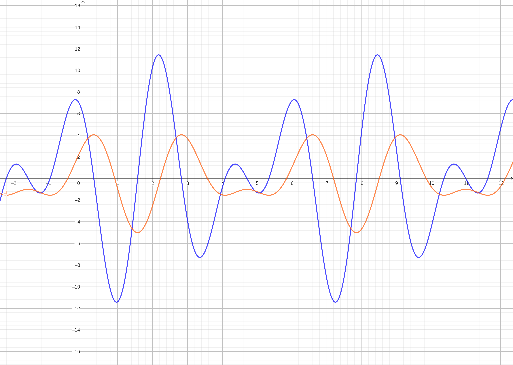
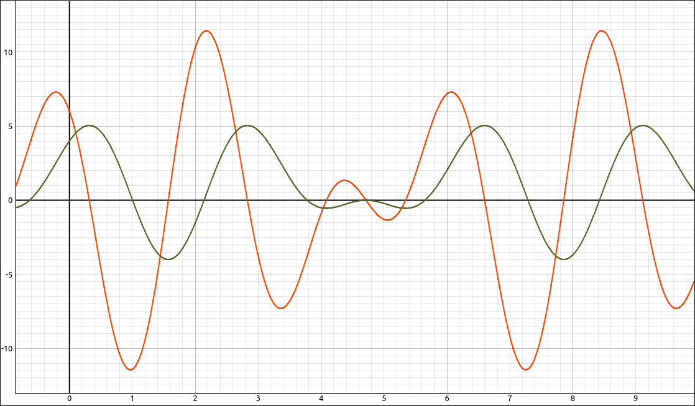
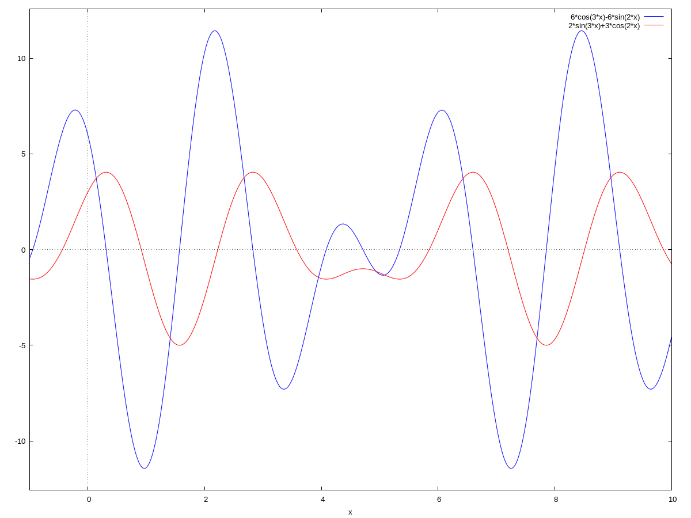

Antiderivatives and The Indefinite Integral#
Discussion & Definitions#
We have seen that derivatives have numerous applications. One of the first was velocity and acceleration. We know that if we have a function \(s(t)\) that represents the position of an object over time then the velocity is \(v(t) = s'(t)\). Furthermore, the acceleration of the object is \(a(t) = v'(t) = s''(t)\). Let’s turn this around a little. What if we had a function that represented velocity \(v(t)\), such as a monitor that recorded your car’s speedometer as you were driving, can we find a function \(s(t)\) that represents the position of the object? If we can we would have to have a process that undoes the derivative in some way and apply that process to the velocity function. We would need to develop a process that takes a rate of change and produces a total change.
As you would guess, of course there is a process to undo the derivative, this is the main topic in integral calculus but also has applications in differential calculus. The process is called antidifferentiation or integration.
Antiderivatives#
Basically we call a function \(F\) an antiderivative of a function \(f\) if \(F'(x) = f(x)\).
Definition: Antiderivative
A function \(F\) is an antiderivative of the function \(f\) if
for all \(x\) in the domain of \(f.\)
Example: As an easy example, we know that \(\frac{d}{dx}\left( x^2 \right) = 2x\). Turning this around into the language of antiderivatives, an antiderivative of \(2x\) is \(x^2\). Notice that we are saying an antiderivative and not the antiderivative. Note that \(x^2 + 1\) is also an antiderivative of \(2x\), so is \(x^2 + 7\), \(x^2 -1234.5678\), \(x^2 + \frac{23}{47}\) , and \(x^2 + \pi.\) In general, \(x^2 + C\) is an antiderivative of \(2x\) where C is any constant.
The above example should not be any surprise since we had a corollary to the Mean Value Theorem that stated just this. Recall,
Corollary: Constant Difference Theorem
If \(f\) and \(g\) are differentiable over an interval \(I\) and \(f'(x) = g'(x)\) for all \(x \in I\), then \(f(x) = g(x) + C\) for some constant \(C\).
In our language of antiderivatives, this corollary is saying that any two antiderivatives of the same function differ by a constant. With this observation we can formalize the general form of an antiderivative.
Theorem: General Form of an Antiderivative
Let \(F\) be an antiderivative of \(f\) over an interval \(I\). Then,
For each constant \(C,\) the function \(F(x) + C\) is also an antiderivative of \(f\) over \(I\).
If \(G\) is an antiderivative of \(f\) over \(I\), there is a constant \(C\) for which \(G(x) = F(x) + C\) over \(I\).
In other words, the most general form of the antiderivative of \(f\) over \(I\) is \(F(x) + C.\)
The Indefinite Integral#
As you would expect this undoing process is very important and has as many applications as does differentiation and we do not want to keep writing “is an antiderivative of …” each time so we will adopt some notation and another name for the general antiderivative.
Definition: Indefinite Integral
Given a function \(f\), the indefinite integral of \(f\), denoted
is the most general antiderivative of \(f\). If \(F\) is an antiderivative of \(f\), then
The expression \(f(x)\) is called the integrand and the variable \(x\) is the variable of integration.
A couple things to notice about the indefinite integral (and hence the general antiderivative) is that the result is an infinite family of functions (and hence curves). Taking the example above,
A few members if the family of solutions are picture below. For all of them you need to consider every real number C.

Family of Antiderivatives#
The Integral Formulas#
So if we are to do this process by hand, or by computer, we need to know some formulas for integration just like we developed for differentiation. The nifty part is that every differentiation formal produces a corresponding integration formula, just by interchanging the roles of the expressions. We will cover the basics formulas here and the more advanced techniques of undoing a product rule or a chain rules will be the topic of the techniques of integration section in the Integral Calculus part of these tutorials.
Basic Rules#
Exponential & Logarithmic Rules#
Trigonometric Rules#
Inverse Trigonometric Rules#
Hyperbolic Rules#
Inverse Hyperbolic Rules#
Arithmetic Rules#
Note
Onr thing to note about these formulas is that in some cases you can use different formulas for the same integrand. So when you are using a CAS to so an integral the result might not be what you expect. In other cases the CAS might use a different technique to find the integral. For example, in CLAE
so it uses the arc tangent and not the arc cotangent. Also,
so it used partial fractions instead of one of the formulas above.
Initial-Value Problems#
One application we can do at this point is solve some simple initial-value problems. An initial-value problem is a particular type of problem you encounter in an area of mathematics known as Differential Equations. A differential equation is simply an equation with derivatives in it amd your goal is to find a function or all functions that satisfy the equation. For example,
is a differential equation. The solution to this equation is
where \(C_{1}\) and \(C_{2}\) are arbitrary constants. Both the first and second derivatives of this function are \(C_{2} e^{x}\), so
Hence it solves the differential equation.
Note in our example above the solution had arbitrary constants in it. So there is an infinite family of solutions to this equation just like there is for an integral. If we knew some specific details about the function \(f(x)\) we might be able to find particular solutions for \(C_{1}\) and \(C_{2}\). This is where initial-value problems come in. These include a differential equation and extra information so we can find a particular solution from the family of solutions. We will not be looking at differential equations that are as difficult as the one above, ours will be of the form,
and we will have some more information, such as \(y(0) = 5\). With differential equations like these the solution is simply finding an antiderivative, more specifically, if we have the equation,
then
Although the notation here is a little misleading, keep in mind that this is a family of solutions. The extra information we might have my allow us to narrow it down to a single solution.
For example, say we have an object that is being moved by a periodic engine and we know that the velocity of the object is given by,

\(v(t) = - 6 \sin{\left(2 t \right)} + 6 \cos{\left(3 t \right)}\)#
Say we also know that the object starts at position 0, so \(s(0) = 0\), find the displacement function \(s(t)\) for the object.
Although we have not discussed integration techniques beyond the formula charts above, knowing the derivatives of trigonometric functions and the chain rule it is not too difficult to see that,
With the added information we can take this a little further. From, \(s(0) = 0\), we get,
so \(C_{1} = -3\) and \(s(t) = -3 + 2 \sin{\left(3 t \right)} + 3 \cos{\left(2 t \right)}\)

\(v(t) = - 6 \sin{\left(2 t \right)} + 6 \cos{\left(3 t \right)}\) and \(s(t) = -3 + 2 \sin{\left(3 t \right)} + 3 \cos{\left(2 t \right)}\)#
Example: Finding Indefinite Integrals#
GeoGebra#
In GeoGebra you can find an indefinite integral using the Integral command. The integral command comes in several forms the two for indefinite integrals are,
Integral(fct): If the function is in a single variable.
Integral(fct, var): If the function is in a several variables and you want to specify the one to integrate with respect to.
We will take the example above, input the function,
-6 sin(2 x)+6 cos(3 x)
Now type in and select Integral and then type f for the function, you will get,
and a \(c_1\) slider.

\(v(t) = - 6 \sin{\left(2 t \right)} + 6 \cos{\left(3 t \right)}\) and Antiderivative#
As you move the slider around the solution curve will move vertically and the \(c_1\) value is added to the equation. So even though it is not displayed this way the solution was \(f(x) = 3 \cos(2x) + 2 \sin(3x) + c_1\). Since GeoGebra automatically inputs values for the constant, for graphical purposes, using it to solve for \(c_1\) given the initial value is cumbersome. Frankly this is easy enough to do in our heads.
CLAE#
In CLAE you can find an indefinite integral using the Calculus > Indefinite Integral option. When you do, a dialog box will appear asking you for the variable, to include the constant, and to use course techniques. There is also a variable properties editor for the variables. This is rarely needed but is there just in case, nonetheless.
The variable is the variable of integration.
If you select to include the constant the program will add the \(C_1\) to the expression, there are some cases where you do not need the entire family of antiderivatives and do not want to bother with the constant.
The course techniques selection will tell CLAE to use techniques that you would most likely see in a Calculus class. If unselected it will use whatever technique it feels is best. Keeping this option selected will make the output as reasonable as possible, when not selected you may see some functions ate are beyond the scope of a college Calculus course. With this said, if CLAE does not Calculate the integral with this option set you can always retry it with the option deselected.
We will take the example above, input the function,
-6*sin(2*x) + 6*cos(3*x)
Select the function then select Calculus > Indefinite Integral, variable x, select include constant and course techniques, the result is,
If you graph the original function and the integral you will see,

\(v(t) = - 6 \sin{\left(2 t \right)} + 6 \cos{\left(3 t \right)}\) and Antiderivative#
and there is a \(C_1\) slider that will move the function vertically. Although we can do the remainder of the initial-value problem by hand we can also use CLAE. Select the integral expression, select Algebra > Evaluate, the variable is x and the expression is 0. As expected, you will get \(C_{1} + 3\), so obviously \(C_{1} = -3\). You can also select this expression and then Algebra > Solve to get \(\left[ -3\right]\). In any case our initial value solution is,
Maxima#
In Maxima you can find an indefinite integral using the integrate command. The syntax is integrate(exp, var) where the first argument is the expression to integrate and the second is the variable to integrate with respect to.
We will take the example above, input the function,
f(x) := -6*sin(2*x) + 6*cos(3*x)
Then to integrate the function we use
fp:integrate(f(x), x)
The result is,
Note that it does not include a constant of integration, it assumes that user can do that themselves. We can graph these expressions together with,
wxplot2d([f(x), fp], [x,-1, 10]);

\(v(t) = - 6 \sin{\left(2 t \right)} + 6 \cos{\left(3 t \right)}\) and Antiderivative#
Example: More Indefinite Integrals#
The following are simply some expressions to find the integrals of using the software. In each case, use the software you would like and follow the procedures outlines in the first example to complete the calculation. Note that your results may differ since the software packages may use different techniques in their calculations.
Try some more on your own.
Note that integration takes a bit more effort in general than does differentiation. Also in some cases finding an antiderivative is very difficult or impossible. By impossible, we usually mean that the antiderivative is not an elementary function. In other words, it is not built up from functions you are familiar with, like polynomials, rational functions, trigonometric functions, etc. For example try to find the integrals of \(f(x) = \sin(\cos(x))\) or \(f(x) = e^{\sin(x)}\). In GeoGebra the result will probably be a question mark and in CLAE and Maxima it will probably just return the integral back to you. In either case this simply means that the software could not do the integral.